Переживут зиму
Сорта, адаптированные к суровому климату
Здесь нет чужих и «просто клиентов». Мы создали место, где опытные садоводы и новички становятся добрыми соседями, обмениваются опытом и вдохновением.
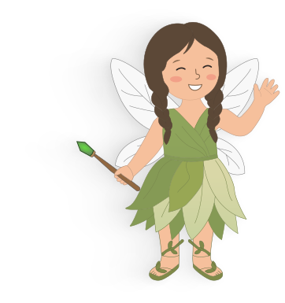
Наш сад назван в честь дочери Маруси. И у бренда такой же характер, как у нее - яркий, честный и немного озорной

Сорта, адаптированные к суровому климату
Подберем растения под ваш участок и задачи
Поможем с посадкой, уходом и вопросами после покупки
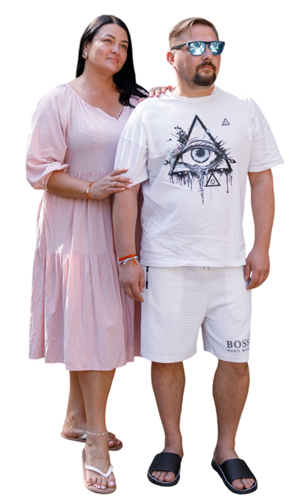
Мы - не просто продаем
«палки с корнями»
мы живем этим
Мы - Алексей и Варвара. Нам чуть за 40 (в паспорт смотреть не любим), и мы те самые «сумасшедшие» экспериментаторы, которые решили, что в Сибири могут расти сады, как на юге. У нас двое детей: Трофим (14 лет) и Маруся (7 лет). Кстати, именно сын назвал наш сад в честь сестры.
20 лет опыта, десятки переделок участка и непрерывное обучение - мы проверяем теории на практике, чтобы вы не совершали наших ошибок.
Мы не «конвейер». Питомник - это наша душа, наше хобби и наша гордость. Мы выращиваем растения так, словно делаем это для себя.
Мы не просто продаем саженцы, мы создаем «Юг в Сибири». Наши растения закалены алтайским климатом и готовы к суровым зимам.
Мы учим видеть красоту. Более 650 человек уже освоили с нами плетение из лозы и научились создавать гармонию на своих участках.
Все эти фото сделаны в нашем питомнике и садах наших клиентов
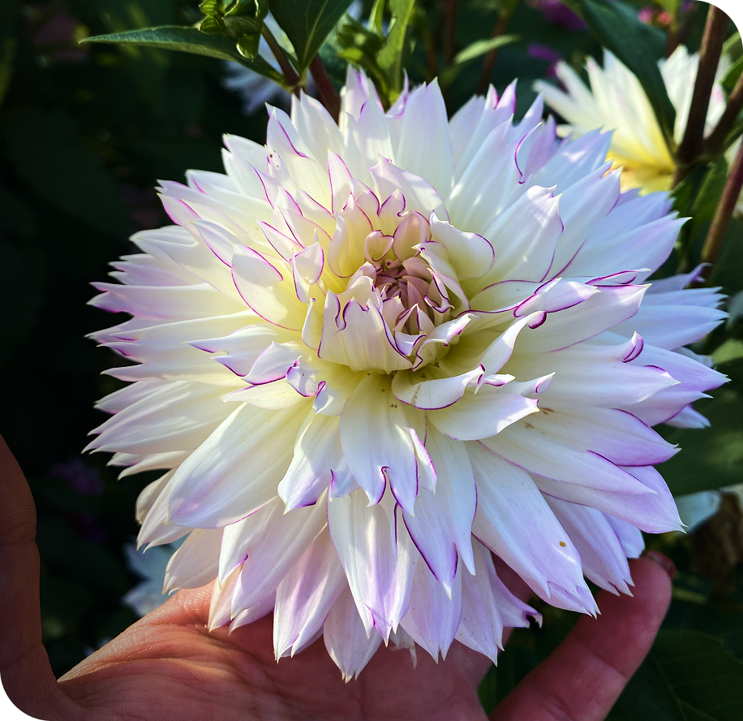
Cafe au Lait Королева осеннего бала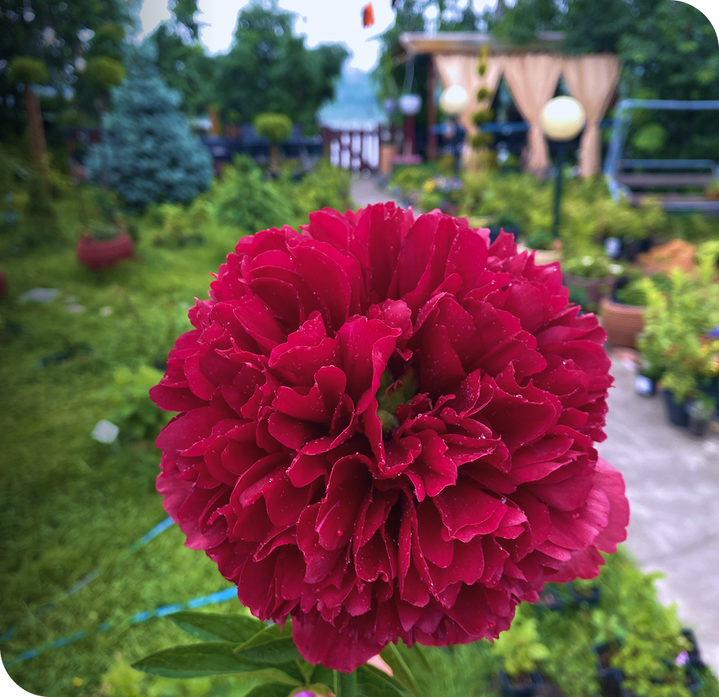
Махровый красный Любимая классика мая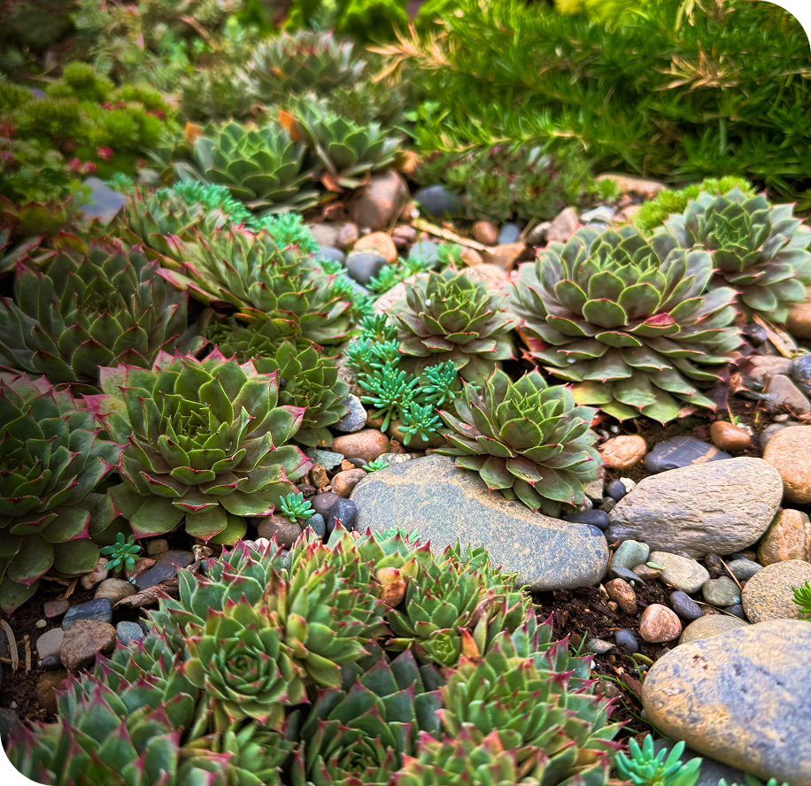
Каменная роза Выносливый ковер из каменных роз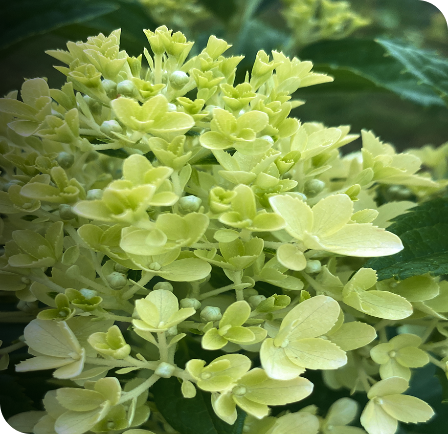
Лаймлайт Светящийся лаймовый оттенок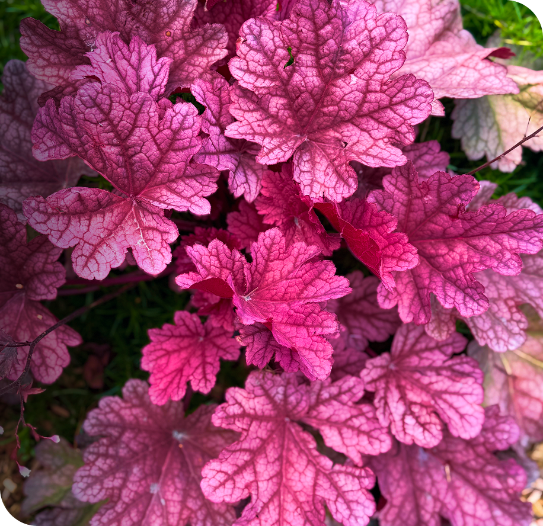
С бордовыми листьями Яркие листья весь сезон, даже без цветов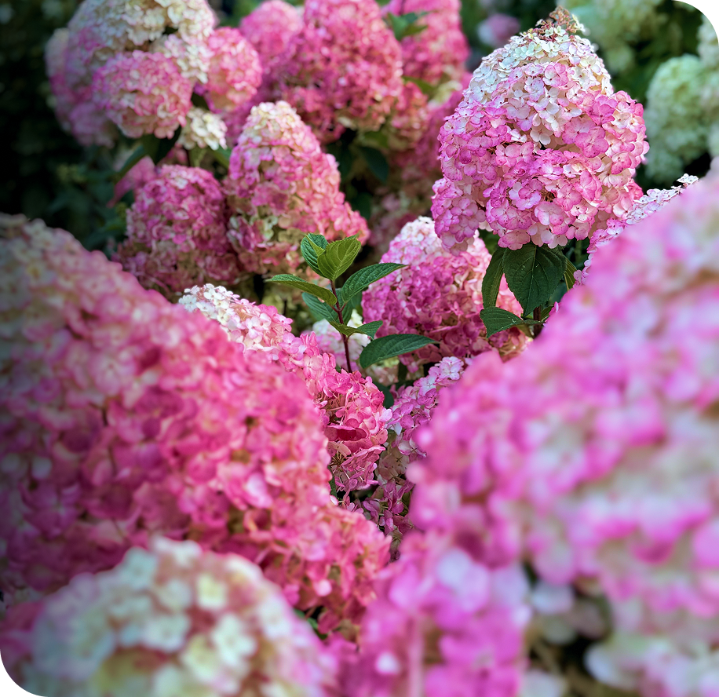
Ванилла Фрейз Эффект клубники со сливками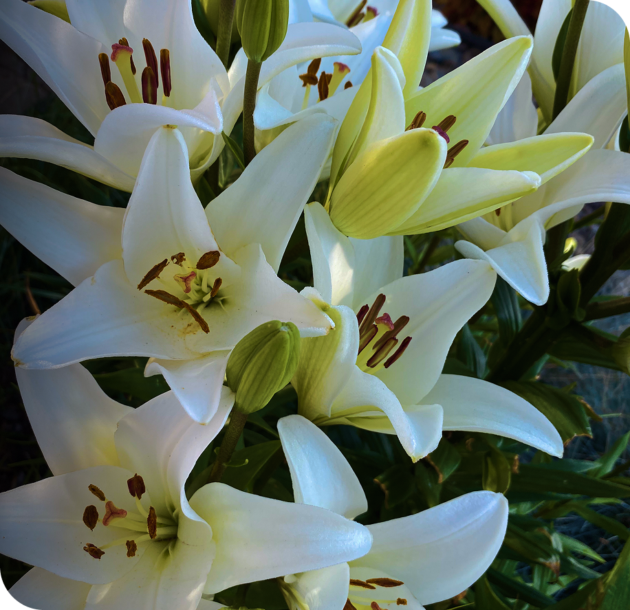
Белая, восточный Элегантность и нежный аромат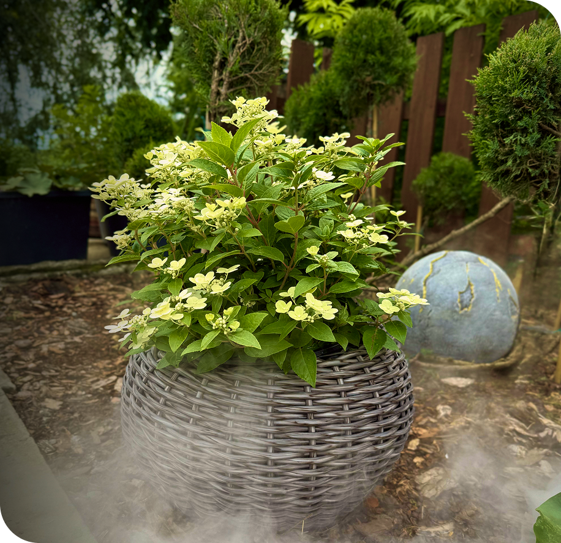
Гортензия на штамбе Высокое искусство в вашем саду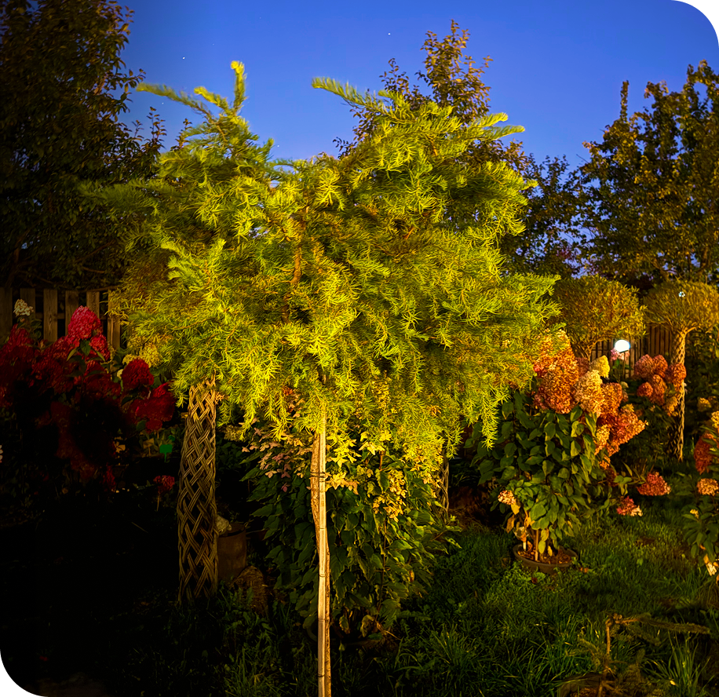
Декоративное дерево Яркий акцент даже поздней осенью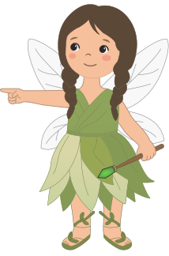
«Маруськин Сад» - это пространство, где стираются границы между продавцом и покупателем
Мы вместе открываем красоту Алтая и вдохновляем на смелые эксперименты
Вступить в сообществоЧто говорят о нас садоводы
Мы отобрали для вас сорта, которые прошли проверку временем и холодом.
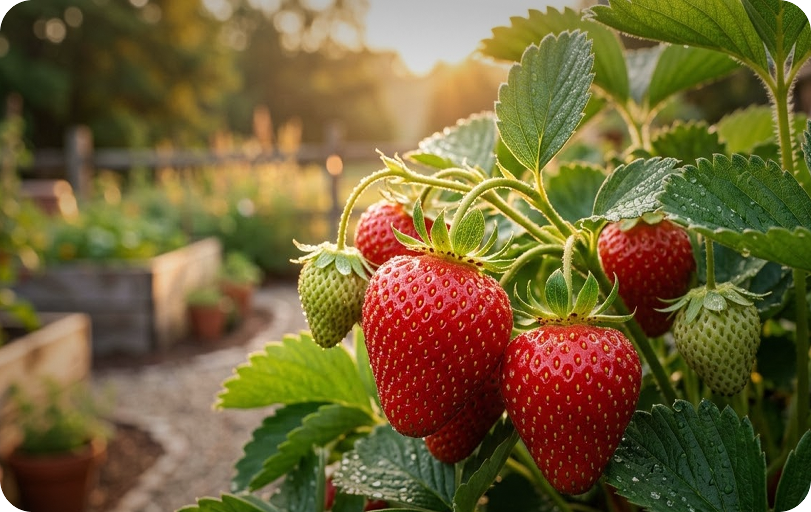
Отбираем только самые урожайные и устойчивые к болезням сорта. Ваша семья будет наслаждаться свежей ягодой прямо с грядки, без лишней химии и сложных подкормок.
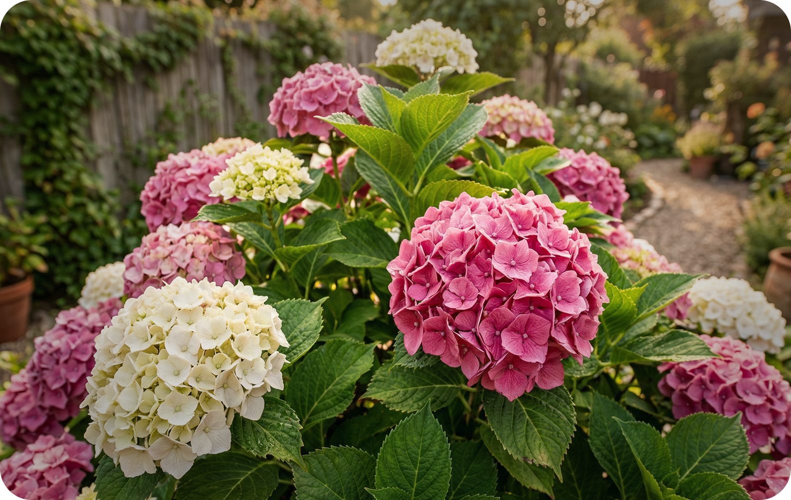
Наша гордость - гортензии, которые адаптированы к суровым зимам. Создайте на своем участке роскошную фотозону, которая будет радовать глаз.
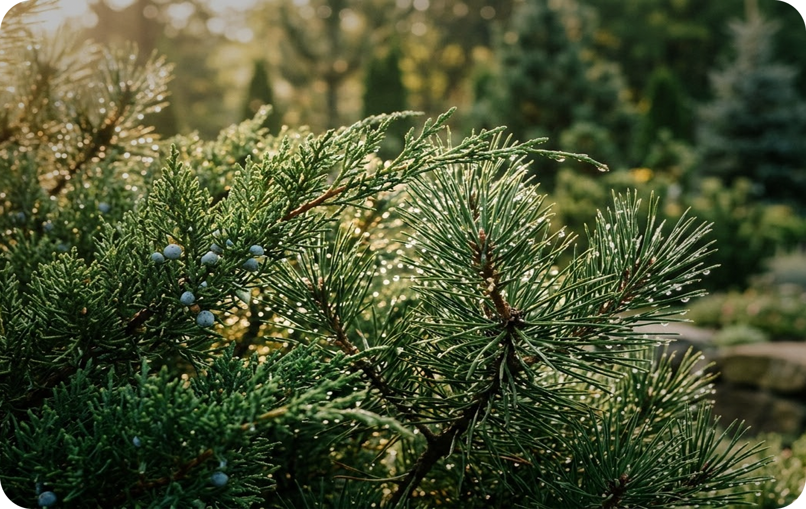
Растения с закрытой корневой системой. Они аккуратно выращены в контейнерах, поэтому легко переносят пересадку и сразу трогаются в рост.